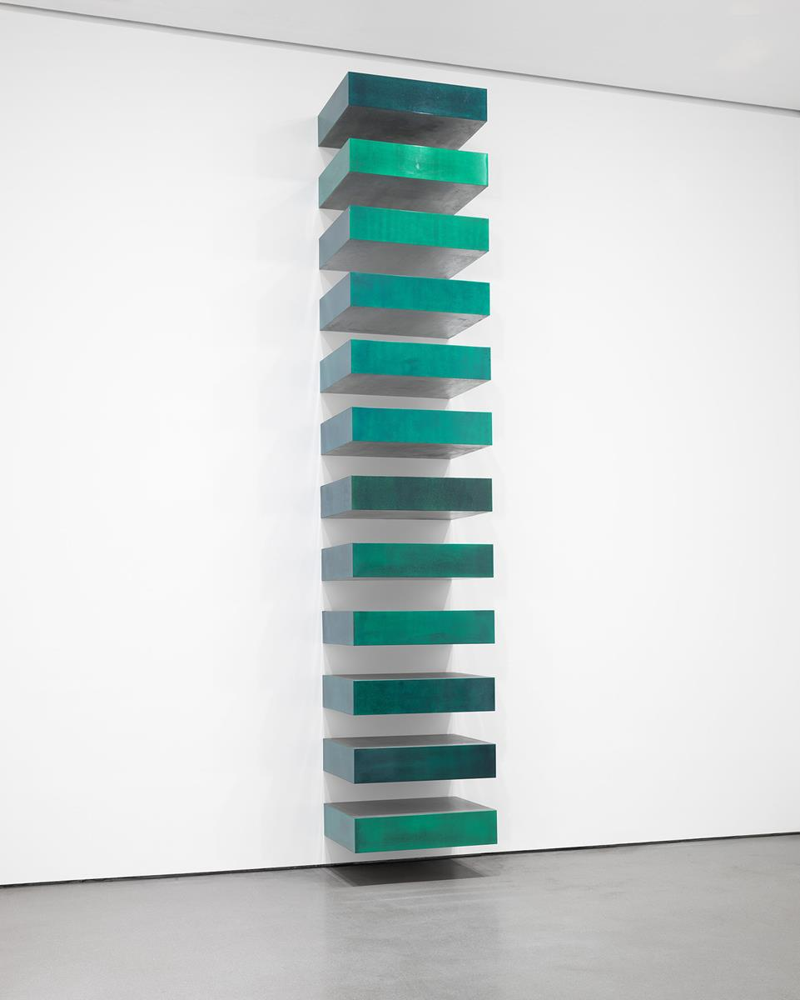
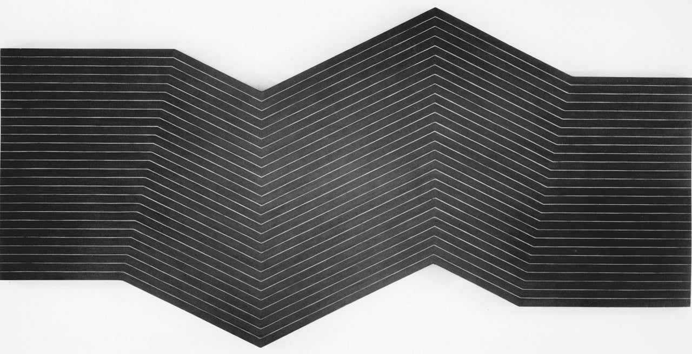
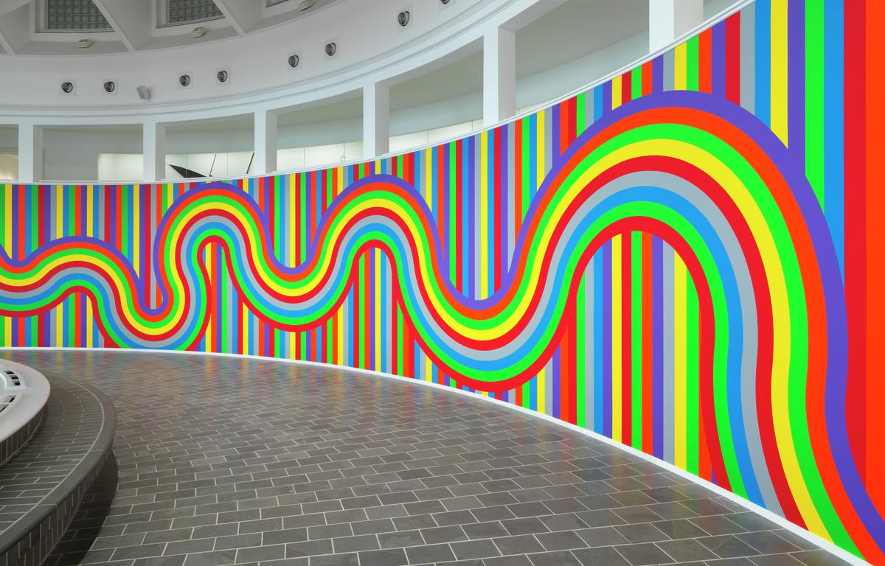
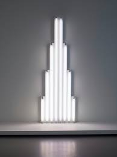
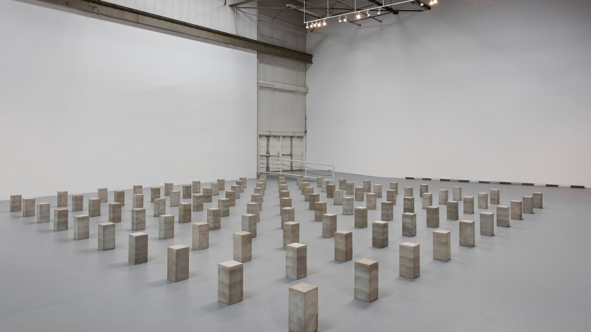
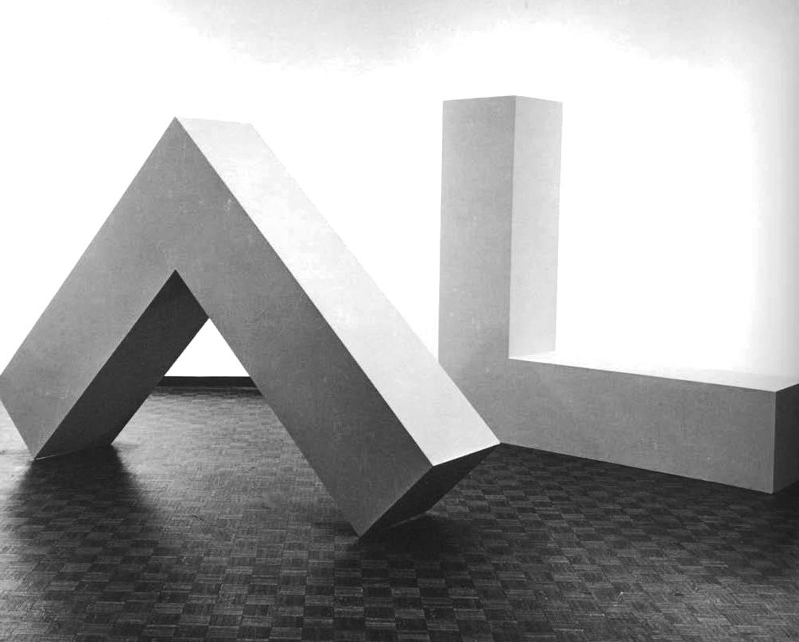
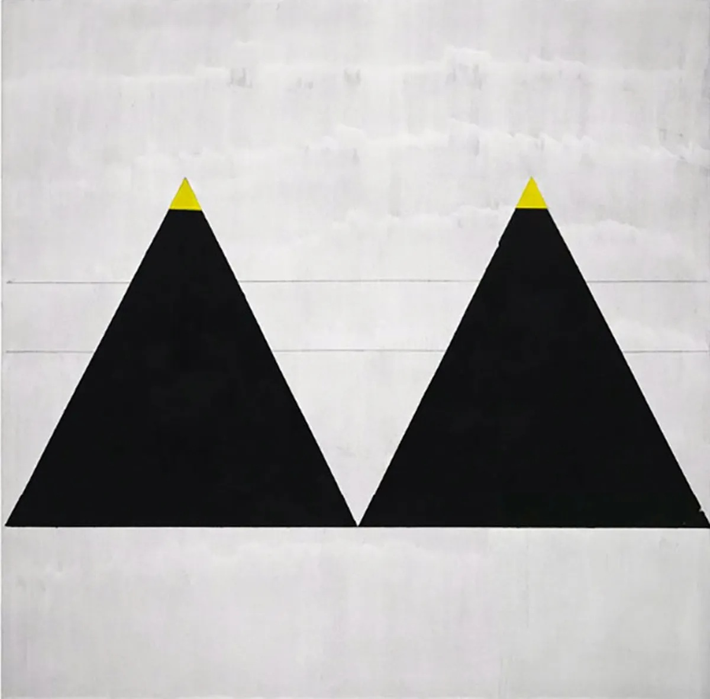
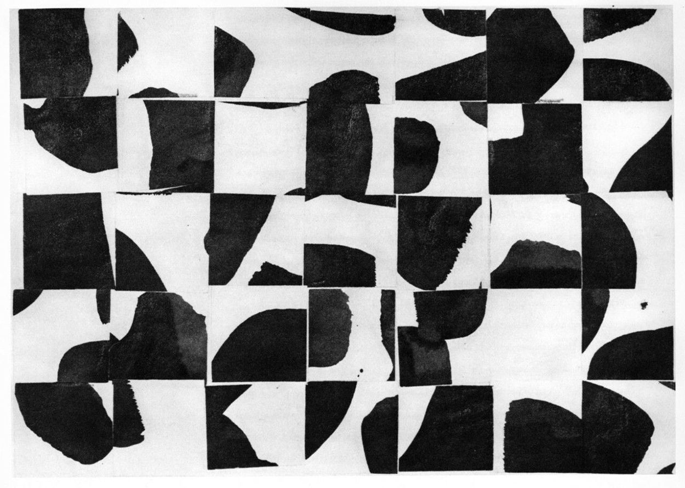
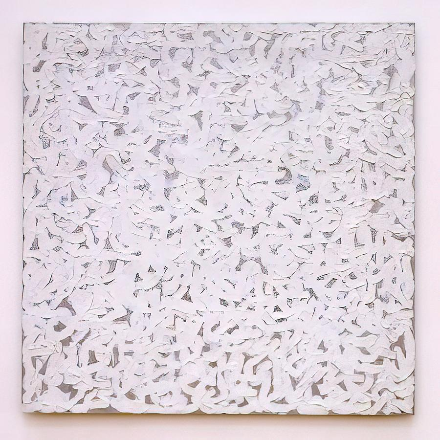

Galería

Donald Judd - “Stack” (1967)

Frank Stella - “Black Paintings” (1959)

Sol LeWitt - “Wall Drawing #1136” (2004)

Dan Flavin - “Monument for V. Tatlin” (1964)

Carl Andre - “Sculpture as Place” (1958)

Robert Morris - “Untitled L-Beams” (1960)

Agnes Martin - “Untitled #1” (1962)

Ellsworth Kelly - “Brushstrokes Cut Into Thirty-Five Squares and Arranged by Chance” (1953)

Robert Ryman - “Points” (1963)